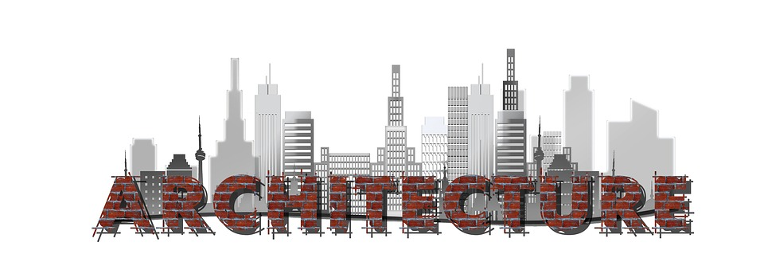

-
 Article
31 Agustus 2020 / No Comment
Article
31 Agustus 2020 / No CommentAndroid Developer
Android pertama kali dikembangkan pada tahun 2003 oleh sebuah perusahaan Android Inc. Android, Inc didirikan di Palo Alto, California, Amerika Serikat pada bulan Oktober 2003 oleh Andy Rubin (pendiri Danger), Rich Miner (co-pendiri Wildfire Communications, Inc), Nick Sears (Vice Prsident T-Mobile), dan Chris White (pemimpin desain dan pengembangan di Webtv).
Read More  Article31 Agustus 2020 / No CommentArsitektur
ARSITEKTUR ADALAH ARTEFAK YANG BERCERITA TENTANG PERKEMBANGAN SEJARAH MANUSIA Arsitektur lahir dari dinamika antara kebutuhan (kebutuhan kondisi lingkungan yang kondusif, keamanan, dsb), dan cara (bahan bangunan yang tersedia dan teknologi konstruksi).
Read More Article
31 Agustus 2020 / No Comment
Article
31 Agustus 2020 / No CommentPolisi
Pada zaman Kerajaan Majapahit patih Gajah Mada membentuk pasukan pengamanan yang disebut dengan Bhayangkara yang bertugas melindungi raja dan kerajaan.
Read More Article
31 Agustus 2020 / No Comment
Article
31 Agustus 2020 / No CommentTentara Nasional Indonesia
Tentara Nasional Indonesia (TNI) sejak didirikan mengalami banyak perkembangan dan penyempurnaan organisasi untuk mencapai efektifitas dan efisiensi dalam melaksanakan perannya Berawal dari pembentukan organisasi Badan Keamanan Rakyat (2 Agustus 1945) selanjutnya berkembang menjadi Tentara Keamanan Rakyat (5 Oktober 1945).
Read More Article
31 Agustus 2020 / No Comment
Article
31 Agustus 2020 / No CommentMekanik
teknik mesin atau teknik mekanik adalah ilmu teknik mengenali aplikasi dari prinsip fisika untk analisis. ahli atau paka dari teknik mesin biasanya disebut sebagai insinyur (teknik mesin.)
Read More Article
31 Agustus 2020 / No Comment
Article
31 Agustus 2020 / No CommentApoteker
Kata Farmasi berasal dari kata Pharmacon yang merupakan bahasa Yunani yang berarti racun atau obat. Farmasi merupakan profesi kesehatan yang meliputi kegiatan di bidang penemuan, pengembangan produksi, pengolahan, peracikan, informasi obat dan distribusi obat.
Read More